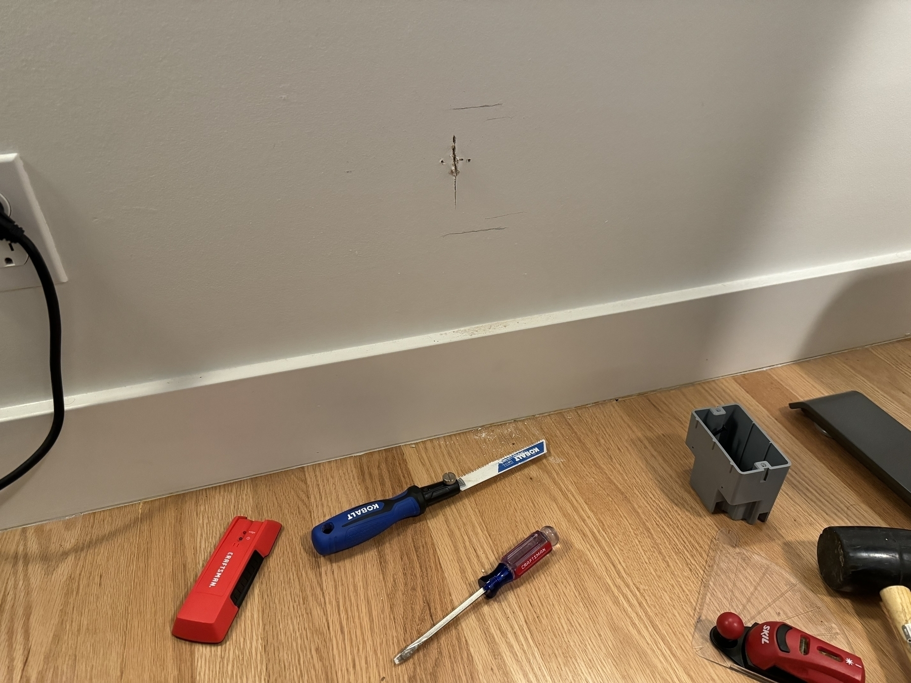
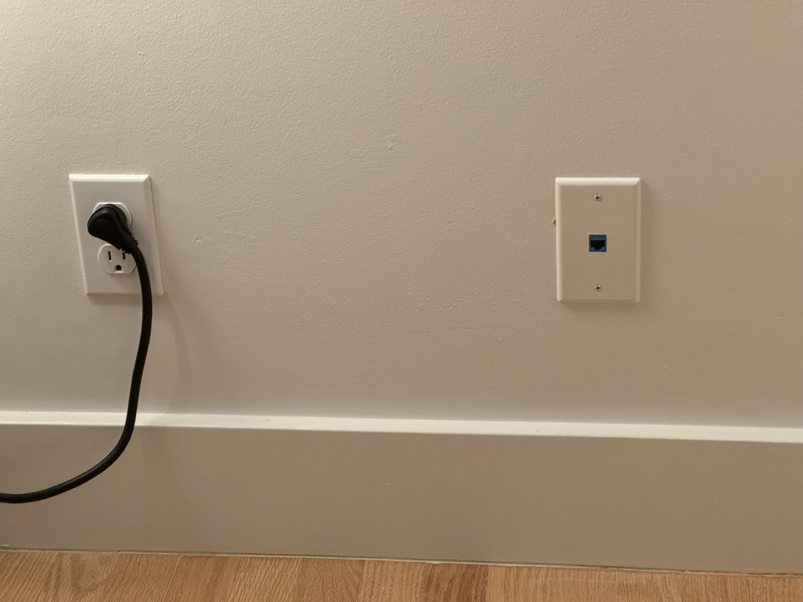
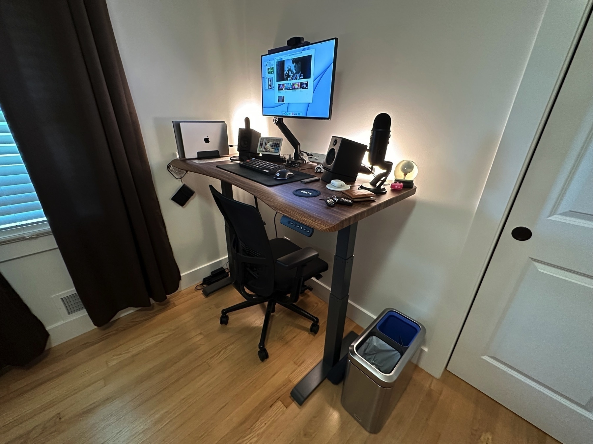

I have a tap water lead test coming in today. I probably should have done this last year. Better late than never.
Ugh… man I really wanted the Lions to make it to the Super Bowl. I’m sure they will be back next year. 🏈
Namecheap wanted to charge me $2,000 for a “premium” domain name… so I logged out of my account and added it to my cart as a guest for $2. When I signed back in during the checkout process, I was able to buy it for $2. What on earth is going on over there?
My posts do not seem to show up on my timeline here… but they do on my blog. And it looks like cross-posting to Mastodon has also broken for me as of late. When I visit the cross-posting section of the site I get random errors.
Edit: Seems to be due to my domain name change.
The Kansas City Chiefs can now claim supremacy in the Bills v.s. Chiefs rivalry. It is no longer in doubt. 🏈
Migration complete! jmanes.blog is now -> j.manes.blog. I am strategically re-organizing my domain names under my last name for more flexibility.
Beginning a domain name migration. I always forget how much of a pain in the ass this is until I have to do it again.
I’ve decided to start moving my purchasing habits away from Amazon. They are so full of junk it isn’t even funny.
Fixing the Kone Air Mouse on macOS
Well folks, this is a wild one. I recently wrote about a Roccat Kone Air mouse that I purchased for use exclusively with macOS. For a short while it worked great, but then the plan quickly fell apart.
Where are my profiles?
In my original blog post, I wrote about how the on-board profiles for the mouse had to be configured using Windows software; specifically, Roccat’s Swarm software. However, since the profiles are on-board, that implies that they are portable to different operating systems. To configure my mouse, I opened Roccat Swarm on a Parallels virtual machine of Windows 11 and began tweaking. After closing the virtual machine, all of my custom profiles worked on macOS as I expected… that is, until I unplugged the 2.4Ghz USB receiver.

It turns out, the USB receiver needs a special sauce that only the Roccat Swarm software can provide. Re-launching Roccat Swarm from the Windows 11 virtual machine and then closing the virtual machine fixes the issue, but this solution sucks. I don’t want to do this every time I dock my Mac. Even worse, I use this same dock for my separate work-provisioned Mac. This means the profiles and their custom button mappings simply are not useful for my work environment. At this point I considered giving up and switching to a different mouse. However… I am not sane, and I really like this mouse.
How does Roccat Swarm do it?
I got to thinking about how this whole thing works. I plug in the USB receiver… I launch Roccat Swarm… and it works. Even between operating systems (as long as the receiver is never unplugged), as proven by my Windows 11 virtual machine workflow. So maybe Roccat Swarm isn’t actually required. Maybe… Roccat Swarm sends some type of system call, wake up packet, etc to the USB receiver. On this hunch I started digging.
Wireshark magic
I hang out in a Discord with a few ethical hacker type folks and when I brought this problem up, one of them recommended I use Wireshark to capture and dump the USB HID calls made by Roccat Swarm. This sounded like a good starting point. I had no idea Wireshark could even be used for USB devices, but I was willing to try anything. As a bonus, listening in on these calls is a clean-house reverse engineering approach to the problem.
After a bit of research I fired up Wireshark on an old dedicated Windows machine using the USBPcap plugin. I then attached the USB 2.4Ghz receiver to the Windows machine and opened Roccat Swarm. Wouldn’t you know it, it worked like a charm!

Ok… so there is a lot here. I don’t know the first thing about USB HID specifications or how it fits together (or at least, I didn’t when I started). I did notice however a distinct set of calls for “SET_REPORT”, each call with a respective data payload. So now I know what Roccat Swarm is sending to the device on startup, and I have the exact data it sends over. Awesome.
Time to learn a new programming language… yes really
I have never programmed for macOS or iOS before, but I knew I was going to have to start. After a few failed attempts to use libusb with Python (Apple has locked out this approach, that’s a rant for a different time), I decided to look into Objective-C and Swift… but mostly Swift in order to preserve my sanity.
After digging for only a few hours I found an awesome library called USBDeviceSwift that abstracts away a lot of nitty gritty details of USB / HID interactions. I pulled this into my project using Swift’s package manager (wild times we live in) and started learning and implementing. This involved reading the USB dump from Wireshark and translating the required segments for SET_REPORT into Swift model objects in my project.
Success and Thoughts
After a few days of tinkering during my spare time I finally got what I was after. I now have a simple command line tool that invokes a list of SET_REPORT calls to the Roccat Kone Air USB receiver. Running this program successfully activates the on-board profiles and their respective button mappings on macOS.

Curiously, doing a single SET_REPORT for any of these inputs is enough to do the job… so I am not sure what that is about. I simply chose to do them all, as that is what the Roccat Swarm software does. Honestly? Totally worth the effort. I’m not exactly sure why this is necessary… and I’m not sure why Roccat engineered the device to require these calls for on-board profile activation, but at least I have it working.
As an aside, I wanted to try implementing this with DriverKit, but Apple wanted me to pay $100/yr for the privilege. I’ll stick with my command line program and a login script.
Installed a new 2.5gbe drop over Christmas break. Looking pretty good. The 2.5gb Ethernet to USB-C adapter came in today and it is amazing.

Looking into transitioning banks again… kinda. I love my local credit union but they are so far behind in terms of interoperability. I’ll keep them around for savings and loans, but I need a more modern banking experience that works with services like Zelle.
Roccat Kone Air + macOS
With a little thinking, I was able to get the Roccat Kone Air mouse to behave as a good macOS citizen. I chose to buy this mouse due to its usage of AA batteries, somewhat muted design, and ergonomics. Configuration did require me to fire up a Parellels Windows 11 VM and install the Roccat software, but after a one-time setup, it is good to go. This is largely doable thanks to the “Easy-Shift[+]” modifier button near the thumb rest in combination with the on-board profile system.
Here are the mappings I chose in the Roccat software:
[Easy-Shift-Button + Left Click] maps to [CTRL + Left Arrow Key]
Moves one desktop to the left
[Easy-Shift-Button + Right Click] maps to [CTRL + Right Arrow Key]
Moves one desktop to the right
[Easy-Shift-Button + Middle Click] maps to [CTRL + Up Arrow Key]
Mission Control
[Easy-Shift-Button + Scroll Up] maps to [Tilt Right]
Scrolls right
[Easy-Shift-Button + Scroll Down] maps to [Tilt Left]
Scrolls left
For the forward and backward thumb buttons, I used a piece of software called BetterMouse on macOS to map them to forward and backward swipe respectively.
Noticing that there is very good music that only exists on streaming platforms. There is no way to purchase it on Bandcamp or otherwise. That really sucks.
Went through a large email address change today, and it is astounding how many companies cannot do email correctly. A good chunk of the sites I use did not have a way to update an email record.
Decided to purchase Sublime Text. I’m very late to the game… so damn late.. but it is once again an attractive option now that VS Code is getting so bloated.
Today was “new monitor day” for me. A substantial upgrade from my Dell UltraSharp of 2018. I opted to go for the LG UltraFine 5k. Thanks to its power delivery, I was able to ditch my Dell docking station and three entire cables! Everything is far cleaner now and it is working great.

I’ve decided to start adopting AA and AAA battery powered perhipheral devices. Specifically so I can leverage Panasonic’s Enloop rechargeable batteries. I am hoping this is a good bet, as I like to keep my peripheral devices for a very long time.
Declaring this work week the week of chill. No late nights, no busting ass, no 12 hour work days, no COVID. I’m going to do about five hours of work per day and call it good.
Where are the good mice for Mac?
I have become endlessly frustrated with the lack of good mice options for the Mac. Most options are immediately off the table due to a requirement on Windows-only drivers and adware. The options that do exist for Mac have a ton of problems.
For example, some of my favorite choices are the Logitech MX Master / MX Vertical mice, but they have this terrible problem with deteriorating after a few years. The rubber coating decays so quickly and ends up feeling sticky. That is not okay for a $100.00 product. Logitech mice also require the use of their “LogiOptions” application, which requests a ton of system permissions on install. Permission to start on log-in, permission to monitor input from your keyboard (!?).. this is not sane. What has happened to sane perhipheral products?

It has been an insanely long week. I tested positive for COVID on Monday… and have had to work until midnight every evening. Sooo close to company-wide Christmas break, though.
It is shaping up to be one of those 80 hour work weeks. Hopefully the only one I’ll have to do this year.
I’m performing a bit of a pivot in my exercise routine. Typically I forgo light exercise due to it not reflecting much on my health tracker. I’m going to change this. I’ll still do my big exercises, but an hour of low-resistance elliptical biking every evening is still worth doing.
Went to the “Dark Forest” near Kansas City today. It’s an event that a local gardening / landscaping company hosts every Halloween. It was awesome.

I got the Type S registered with the state this weekend. Had to pay the hefty sales tax at the DMV (it’s a Missouri thing), but now it is officially mine. I need to get it ceramic coated soon!

Went to Applefest in Weston, MO today. Lots of good food and craft booths as usual. Also spotted a nice day moon.

Today was the day! I received my replacement work laptop and now I have two twin MacBook Pros. One for work and one for everything else. The best part about this setup is the shared docking station. Very consistent experience back and forth.
It was time for me to request a technology upgrade at work. Moving from a 10th gen Intel Dell Precision 5550 to an M2 Pro MacBook Pro. It should be here on Monday and I am very excited to get more than two hours of battery life. 🍎
I went to see Chipman pass in Lees Summit today and saw it has been destroyed. They are putting in a three lane. I am totally crushed. I would come here late at night to do runs on summer evenings. maps.app.goo.gl/qc53TWqiN…
From Type R to Type S
It was a special day today.
I went into the Acura dealer to take a look at the Integra Type S. I had been interested in it for a while now, but it was nothing more than a passing interest. However, after talking with a few of the sales reps, they gave me a deal I could not refuse. They offered me the MSRP sale price of my 2019 Civic Type R as trade in value. In other words, they offered me a trade in credit equal to what I paid for the car brand new in 2019. 🤯 I took the deal and quickly got into a gorgeous “platinum white pearl” Type S.
This is not a typical “day in the life” type of event for me (clearly), but it is something I must write about. I’ll miss my Civic Type R; that car did a lot for me. It was a purchase of passion that followed my renewed interest in the automotive field. This interest pulled me out of a sadness that had followed me for years prior. It’s hard to explain, and it sounds very silly and materialistic. It wasn’t the car itself that put me into a better place, thankfully I can take the credit for that. The Type R did, however, symbolicly represent that special moment in my life where I felt a new passion for the first time in years. It represents the bloom of my 20s, even if that bloom came quite late (27).


I don’t have many new photos of my new Type S as of writing, as it was pouring rain today. Fitting for a bitter sweet day; the beginning of fall in the USA. There will be more photos to come once the weather improves, but for now here are a few from my garage.


Here’s to my 30s, I suppose! I can’t wait to take this car on some new adventures.
A strict exercise and diet routine no longer works for me as it did just a few years ago. I am not sure what changed, outside of aging, but it is really frustrating. Somewhat recently, I tried intaking around 1400 KCal / day (on average per-week) along with low-sugar intake and my weight barely budged even after a few months. I really don’t think I can go lower than this, so off to the doctor I go! Hopefully I can get a metabolic study done, or at least get my thyroid looked at. Thankfully my weight has not ballooned, but I should be about 30 pounds (13.5 kg) lighter than I am today.

I had an awesome day at the Kansas City Zoo! I wish I took more photos but I get pretty swept up with the sights.


Where Dyson Fans Work
For many years now, I have used Dyson products: two Pure Hot+Cool HP04, one Pure Humidify+Cool PH01 and a few of their vacuums. When it comes to the vacuums, I couldn’t be happier with the performance and experience provided. As for the humidfier and heaters, though… it is complicated.

Originally, I purchased a pair of Pure Hot+Cool HP04 heaters for the winter time. I keep one in my bedroom and one in my office where my pet guinea pigs live. I made a quick assumption during my purchase that you “get what you pay for.” Dyson’s products are attractive and expensive, so I figured they would offer the highest performance. As it turns out, in this case, it isn’t true.
These devices are noisey as hell.
My first and chief complaint about these devices: they all suffer from build quality defects that lead to noise pollution. I don’t use that term lightly. It is seriously unbearable at times, to the point that I *must* turn the device off for my own sanity. Typically, the issue happens at the lowest speeds. There is some sort of fan oscillation going on that leads to the highest pitch squeeling imagineable. This happens with three of my Dyson fans; this is no fluke. When the fan is set to run above level 4 (out of 10) the squeeling will subside. Still, not ideal. Nearly a deal breaker for the product as a whole, in fact.
These devices are not good for air filtration.
My second complaint is that the air filtration offered by these machines is horrifically poor. The CADR (clean air delivery rate) rating is laughably low, and cheaper products exist that do the job far better. In fact, strapping MERV 8 rated HVAC filter on to a box fan does a better job. No, I’m not kidding. Check out this CBC News video for details on that one.
Not only is the filtration unbearably slow, the filters within the unit cost around $80 to replace as of writing (2023), and they only last about one year before the Dyson app warns about ordering a replacement. In contrast, BlueAir offers a 211+ auto model with a filter that lasts WAY longer with over 4x the CADR. The replacement filter for the BlueAir? It is only $50. As of the time of writing, the BlueAir machine costs a whopping $250 less than what I paid for my Dyson, and it costs less in filter replacements, too. All of this is why my dining room / kitchen area is proudly accompanied by a BlueAir 211+ Auto.
The humidfier takes a long time to humidify.
My final complaint (whew, as if I could be any more negative) is that the Pure Humidify+Cool PH01 takes what feels like forever to humidfy a room of any size. I believe this problem is very much aligned with the CADR problem. These fans simply do not move a lot of air, and that is by design. They are very nice to use as a personal fan, as they are (supposed to be) quiet and focused.
However, the Pure Humidify+Cool PH01 has a benefit I haven’t seen in other humidifiers in that it actually cleans the water before it puts it out into the room. It does this with UV light, which rocks, because typical humidfiers you see on Amazon are utter garbage in this respect. Don’t believe me? Buy a random Amazon humidifier and let it run while it sits next to a smart air filter such as a Dyson or BlueAir. Your air filters will fight for their lives trying to pull the gunk out of the air. With the Dyson PH01, no problems, the air is clean.
Somehow, these devices are still better than the alternative.
Now here is where things get complicated. These machines all perform a very specific subset of features that you will not find elsewhere. After getting fed up with the compromises, I started looking for alternatives only to find myself at an impasse. I wanted the best possible result in each of the respective areas (do one thing and do it well).
If I wanted the best possible air filtration system, I could get a BlueAir for my bedroom and for my office. However, these are not heaters. Because of this, I’d also need to buy a set of heaters, and as it turns out, really good space heaters cost really good money. For example, De’Longhi offers a very nice oil-filled radiator style heater for around $170. Ouch! But wait… the BlueAir filter is not a heater, and it is also not a fan. So now a pair of high-quality fans are required. At this point, I’m up to a total of six devices (three for each room) to replace the two Dyson machines that I have. That means three total electrical outlets instead of one, and three times the space (which I do not have). The total cost of these machines added together would be in the same ballpark range as a Dyson. Whoops! No money saving to be found here (this wasn’t the goal, but it would have been nice).
All of what I have touched on so far doesn’t address the problem of finding a good humidifier that outputs clean air (good luck with that shit, I tried). The integrated IoT (internet-of-things) capability was also not accounted for in my quest for the best, though you likely won’t find anything that works together as seemlessly as Dyson.
I guess this is essentially where Dyson has the market. It’s a bit strange, but this is a case where the market leader is a jack of all trades, and master of none: It’s not the best fan, it’s not the best heater (or humidifier), and it’s not the best air filter… but it does all three of these things while using very little space, and for a competitive price.
For now, I’ll be coughing up $80 for an air filter.
September is here once again… it has quickly become one of my favorite months. For whatever reason, around this time in the year, I start to reflect on where I am in life and where I want to be.
When To Pay For Software
I recently let my Discord Nitro subscription expire, and this is a tough one for me. I use Discord quite often, but find paying for it very hard to justify due to its privacy policy and investment structure. It has become a rather ubiquitous tool in recent years, which makes me wonder if it is going to result in yet another Twitter fiasco.
Generally, I am ok with paying (and donating) for software services. They have to meet some level criteria for me to feel comfortable, though. For example, if the software and/or service is:
- Open Source / Open Platform
- Lemmy (and selective instances)
- Mastodon (and selective instances)
- Proprietary and/or Centralized, but operated in good faith, with a history and face
- Kagi
- MarsEdit
- Micro.blog
- Ivory
- Privacy respecting by design, with mixed open source / proprietary status
- 1Password
- Proton Mail
- iCloud (select services with advanced security enabled)
Discord is a prime example of something that does not quite fit into any of these categories. Discord does not respect privacy. Discord is not Open Source. Discord is not decentralized. Instead, it is held up by a combination of paid users and investors. This is enough to chase me away. I’m waiting for the inevitable sale of the platform and its data to a big tech conglomerate. The other shoe has yet to drop. Let’s just hope it isn’t placed into the hands of another Elon Musk.
I seem to bounce back-and-forth between keeping social media in a browser via tab groups versus accessing them through dedicated apps. Dedicated apps offer a higher level of comfort for interaction, but I think that comfort comes with a time cost (i.e., routinely checking the various apps). Having all of the social media sites in a single location (tab groups) allows me to get everything out of the way at once.
I noticed today that my blog theme looks good everywhere except… Chrome. Great. It appears that the backdrop-filter CSS property does not account for / support multiple-levels.
Now that I have explored multiple fediverse options, I think it is time I start deleting a few accounts that I no longer care to upkeep. Calckey (Firefish) is a no-go for me. Also going to be leaving a Lemmy community that was more closed-off and safe-space driven.
A new shelf for the wall. Thanks to @jean for the MB stickers!
![A newly mounted and stylized shelf on a plain white wall. There are three levels to the shelf and it appears to be held up by an old rustic-style pipe that mounts to the wall. On the top shelf: A plush from the Interface series. An model Acura Integra. A snow globe with a golf ball inside. A tiny painting of a Civic Type R. On the middle shelf: A thank you note from Jean at Micro.blog. A Ferrari F40 Hotweels toy in the original packaging. A thank you note from a friend with a doodle of a capybara. A transparent resin block with a model car inside of it. On the bottom shelf: “Cracking the Coding Interview” book. “The mythical Man Month” book. “Introduction to Algorithims” book. A nice complete set of the four “The Art of Computer Programming” books.](uploads/2023/41a625bf53.jpg)
We are finally getting a break from the heat here in Kansas City. It’s nice to have all of the windows open around the house. Fall can’t get here soon enough…
I’ve been practicing quite a bit more on LeetCode and although these problems are fun little brain teasers, it is ridiculous to think these problems are used in real interviews.
It has been very stressful at work lately. Not much time to blog in the past few days! I’m currently going through multiple background investigations to obtain clearance for specific subject areas at work. It is a LOT of work.
Finishing up my vacation in Navarre, Florida. I figured I shoud post some of the best photos I got. Until next time, Florida!


I’ve been using Photomator to touch up some of my Florida photos. What an incredible tool! I plan on sharing a larger photo set at the end of this week.


A good read from the Oracle blog in regards to IBM’s recent hostile behavior in the FOSS space.
I typically refuse to use anything other than stable software, but I made an exception recently with the Orion browser and 1Password. On nightly builds of 1Password, they have finally rolled out “Trusted Browsers” allowing you to integrate 1Password with any browser of your choice, including Orion!
Well… I see that lemmy(dot)world got hacked and is now re-directing to an old-school shock website. Very good… 🫥
Finally starting to lose weight again after two years of gaining. Standing desk, alternating exercise days and a protein focused diet are the primary changes I made, but my body continues to be a mystery. My prior (and easier) approach to weight management from a few years ago no longer works.
I took this last November (2022) at Arrowhead Stadium. I’m really excited for September when the next season starts! 🏈
Thoughts on Meta's Threads Social Network
I’ve been thinking a little about how Meta’a Threads social network operates; specifically the algorithmic-first feed.
The algorithmic-first feed is no blunder, it was done intentionally and it was very smart. Is it appealing to most of us who care about this kind of thing? Absolutely not. However, it is appealing to two specific groups that are absolutely required for a behemoth like Meta to bootstatrap themselves for an adjacent market sector: celebrities and brands.
An algorithmic feed turns a ghost town into a brand new mall. It’s a place where things are obviously happening. This serves a few purposes that ultimately cascade.
- It offers celebrities a platform where they know they will be seen before others, which is good for them.
- It offers brands a platform where they will have a better presence, which is good for them.
- The combination of 1 and 2 provde an entertainment-like experience of infinite content for users, which probably isn’t good for them, but they will consume it and complete the cycle.
The third point about infinite algorithmic content is likely where folks will start questioning my reasoning. Who wants to get on a “social network” just to browse around and view random garbage? As it turns out, a lot of people. How many hours do people spend mindlessly scrolling TikTok videos made by people they don’t know? I’m going to guess most of them.
Instagram has slowly been adopting the algorithmic-first feed over the past couple of years and it seems to be working for them. Why wouldn’t Threads also continue down this path? After all, adding a personal feed based on who you follow is the easy part. This functionality could be trivially added by Meta in the future if enough people are interested… but will they be?
I will never sign up for Meta’s Threads social network, but if it ends up being the final nail in the coffin for Twitter I will be grateful.
I really wonder if Bluesky has a future. Despite the flaws of ActivityPub and the Fediverse, it has a ton of momentum right now. Will Bluesky ever see such momentum? In practice, Bluesky is currently an invite-only centralized Twitter clone with promises of a bigger future.
Purchased a .xyz domain today. I’m not entirely sure as to how I want to use it, but I’m thinking about making it an index page of sorts as to where to find me around the web.
Blogging in the Fediverse
I have been exploring the Fediverse in all of its forms over the past few days. Lemmy instances, Mastodon instances, and the various administrators involved in it all. It is the wild west right now, but in a way that is optimistic and excting.
I've been thinking about how my blog here on MB fits into the equation, and I think MB serves as a more meaningful "home base." The content I share here is a bit more than a fleeting thought (unlike Mastodon) and it isn't specifically to spark conversation (unlike Lemmy). I think the strength of MB, right now, is that it offers the full-on “Web 1.0” (I am stating this affectionately) blogging experience with the ability to tunnel blogged content to/from the Fediverse.
Personal Social Media Update
I decided to refine some of my social media usage today. I'm going to be deleting my reddit account due to the 'enshittification' going on there, and instead using Lemmy.world. After doing some research into the administrator of this Lemmy instance, I found that they also have a Mastodon instance. So.. I created an account with them on Mastodon.world. I will primarily be using Micro.blog, Lemmy.world and Mastodon.social from here on out.
If anyone else likes the *.world social media sites, the owner has a Patreon to donate to as well.
I purchased some new fleece for the loft portion of my guinea pig enclosure. No more paper bedding up there! Lambda is enjoying it thoroughly. 
The FK8 is ready for a road trip to Florida! It has been a while since I’ve done a deep clean on the interior. 
It looks like the Orion browser is getting support for 1Password after all! Very excited to try this out once it is ready.
Thoughts on the Titan submersible
It is unfortunate to hear about the Titan submersible implosion. I am unsure as to why anyone would have boarded that contraption given all of the information around it. I suppose they were mislead or perhaps threw caution to the wind. Given the Navy’s account regarding their detected implosion acoustic signature, the submersible simply descended into its own demise hours after departure.
It really reminds me of Mt. Everest, and the folks who spend thousands upon thousands of dollars to climb it and inevitably die a terrible death. I do not understand the desire to do these things, and I don’t think I ever will.
Happy Juneteenth! I’ve been reading up on this day on Wikipedia and it has an interesting history of celebration… since the 1860s!
I think the only thing that keeps me using mastodon.social as a side account is the Ivory app. So wonderful to use!
Years ago, I broke myself of the habit around photographing / recording live concerts while attending them - I’m proud of this! Strangely though, this made its way into other parts of my life. I’ll go out and do something novel or exciting and then later think “shoot why didn’t I take a photo!”

I’ve been inspired to be more active since getting my standing desk. No more sleeping in late, I’m a 7:00AM guy now, with my workouts being done in the morning. So far so good, though the first two days were hell. It is never fun to “fix” a sleep schedule.
I got my motorized standing desk in on Friday. I finally got it all set up and it is lovely! I’m looking forward to standing more during the day rather than sitting. Also, being able to fine-tune a desk’s height while sitting is a game changer for posture!

Micro.blog is so versatile that I think I may just re-direct my landing page to my blog’s about page. One less thing to keep up on.
Looking back on when I first got my FK8 today. A lot of folks in the car community call it ugly, garish and childish. That might be true, but I love this thing. 🚗

I recently became interested in Gary Numan’s music. All of his old hits are great! Just today, though, I decided to give his newer work a listen… and it is absolutely incredible. I could not believe it. Typically when I get into a band, I get stuck in one of their “eras,” if that makes sense. I either enjoy their new stuff or their old stuff, or somewhere in the middle. With Gary Numan, though.. I love both his old and new stuff. Betrayed from his latest album Intruder is incredible, I can’t get enough of it.
I have sunk quite a bit of time into my blog theme and I am proud of what it has become. Now I need to touch up my personal landing page as it is quite out of date! I think I’ll be ditching JavaScript there, in favor of a pure CSS approach.
The Reddit app Apollo being shut down is a tragedy. To me, this app was the only thing that made Reddit bearable to use on iOS. On Android, I use an app called Relay, which I assume is also getting shut down during this mess. To be frank, this is the end of my relationship with Reddit as a social media platform. I will not longer be using it.
Context: Apollo on Reddit
The Air Quality Index (AQI) has been pretty bad here in Kansas City. Yesterday evening it was up to 138! I know folks further up north have it worse, but this is maybe the worst I have seen it this far south of the Canadian wildfires.
The Vision Pro is sexy aesthetically; I really like the hardware. The application of the hardware is where the plot is lost with me. I don’t think I’d ever use this for anything more than a party trick. Also… it is damn creepy. 🤯 #WWDC23
Rest in Peace to my 2019-purchased Bose NC 700s. I woke up to the smell of burning wire and found this in my living room.


I left them to charge over-night and that was apparently a dangerous move. I knew the battery was going out on these for some time now, but I did not expect it to fail like this!
The lack of e2e bookmarks on Safari is kind of a bummer. Also it is not great for development work. Apple definitely has other priorities for this browser.
Stuck in a loop of hating every browser right now for different reasons. Firefox is so close to being my main choice... I mean it basically is everywhere other than my mac.. if only it were a little more refined on macOS. ☹️
DIY Home Network (May 2023)
I am yet again refining my home network! This project involved running CAT6e cable to my entertainment system area. It went rather smoothly, despite requiring me to install a new wall gang and outlet for the ethernet port.

The final result is prettier, though I did not end up painting over the patched drywall because I am lazy. That is future James’ problem once it is actually visible to guests, rather than being hidden behind a media center.

The line runs from a managed 2.5gbe switch near the firewall. From this port, it hooks into an unmanaged 2.5gbe switch that then feeds the PlayStation 5, Sony TV and Intel NUC media PC. Loading media is instantaneous and the response feel is WAY better than before. Best of all this frees up airtime for the access points, so the entire network technically benefits from this change.

On to the next project!
Currently reading: IPv6 Fundamentals by Rick Graziani 📚
I started reading this a while ago and the author does a good job keeping it interesting. There is a lot to know about IPv6!

Attempting to move a bunch of hosted applications away from Linode and on to Oracle Cloud Infrastructure. As it turns out, this is not straightforward. Even a direct copy/paste of the docker data folders / compose files does not end in success. 😬
Finally got a working version of my new Micro.blog theme up and running. Currently keeping it safe with whites and grays for the colors, but I plan on experimenting soon. I find working with fewer colors to begin with helps me focus on whitespace and structure.
I learned recently that exactly Zero of my Google smart home devices support DHCPv6. Including my Pixel 7 Pro. What the hell man
Launchpad: A Bad macOS Citizen
Have you noticed how many features added to macOS over the years are simply “bolted-on?” It is perplexing how some of these features not complete, and yet, they persist.
Launchpad is a good example of this. It is essentially a bolt-on UI abstraction of the Applications folder that allows users to access and organize apps like one would on an iPhone. UI abstractions are fine if they are feature complete, but Launchpad is not feature complete.
Let’s look at a common workflow within macOS; uninstalling an app. I’ll drag Firefox from launchpad to the trash on the dock. What would a user expect to happen here? Classically, dragging an application from the Applications folder to the trash would work as expected. This is the uninstall workflow for applications on macOS and has been for over 20 years. So what happens when this is done via Launchpad?
Nothing. Firefox moves back to where it was in the Launchpad grid and no action is taken. Huh??? Well, let’s try another app. Let’s drag Mona to the trash and see what happens.
The application awkwardly transitions back to where it was in the Launchpad grid… but wait! Now we are presented with a strange, poorly presented popup asking if the application should be uninstalled. Why did the application not simply move into the trash? Why is Mona being presented with an uninstall dialog, where as for Firefox nothing happened at all?
As it turns out, Launchpad can only uninstall applications that were originally installed via the App Store. Not in the OS standard way, though. Instead it leverages a brand new popup dialog. Why?
Both apps from this example, Mona and Firefox, can be uninstalled via drag-and-drop from the Applications folder to the trash. Only in Launchpad does this weird behavioral difference exist.
Launchpad’s bolt-on status goes beyond its bolt-on look and feel. It violates macOS UX – this is not the way this OS was designed to be used. It is functionally broken. It is not a joy to use. I think it is fair to say that Launchpad is not a good macOS citizen.
I had enough today, and ditched the Apple Weather app. It is so hilariously bad at what it does. I cannot believe this product was shipped.

Another weekend gone too fast. I spent a good chunk of it re-working my firewall setup. I finally have IPv6 operational through my ISP!
I have a few thoughts I need to get into a longer post about macOS. I started using it again for the first time in 10-ish years.
Wow, Tucker Carlson is ousted from Fox News! They will probably replace him with someone far crazier, but I can still enjoy him being canned from afar. 😎
I spent a good chunk of my day attempting to fix issues on the nvidia shield. I used to have it set up for retroarch which would load my games over a network. Apparently newer versions of Android restrict access to those folders now… what a mess. I may need to move to a dedicated machine soon.
Thunderstorm today with the windows cracked open… this is as good as it gets. Though my guinea pigs are a little frightened.
A wonderful Sunday for me. Went on a walk, lifted some weights, did some bike riding… I should really take photos next time I am out so that I have more than text to share.
For anyone that uses HomeKit but has Nest products, you gotta check out Starling. It is crazy good and went far beyond my expectations: www.starlinghome.io
Sheesh it has been a long time since I have written something even mildly substantial in length. I am rusty in the paper writing department these days. Also it is almost 3:00 A.M. and I should be sleeping instead of editing a blog post… I swear I’m a responsible adult.
The Folly of the Technical Interview
Software engineering interviews are certainly something, aren’t they? A potential employer reviews your accomplishment, sees the code that you have contributed to open source projects on GitHub, and things seem to be going great. Then, the technical interview appears. It’s all down hill from here.
Does this sound familiar? I’m sure it does to many of you, and you shouldn’t feel bad about it. The majority of technical interviews as they are given today are garbage. There are some companies that do them well, but most of them do them bad. For this entry, I will be focusing on the companies that do them poorly, and describing why they are so terrible.
The technical interview of today is often nothing more than a bastardized I.Q. test.
Have you ever noticed that coding interview questions are often needlessly complicated and do not reflect anything that you would ever do on the job? Me too. If you have noticed this, it means you have actually worked in the field. Many of the questions are based around syntax-correctness, memorization of random API method signatures, and very specific algorithm implementation details. This is cute for trivia night, but it means nothing in the context of the job.
A fun analogy: For my friends in the arts, let me give you an analogous example question that you might be asked if your technical interview were written by a hiring software engineer.
“You have a photoshop document with two layers. A base layer that is black, and a top layer that is white. A masking layer is added to the white layer and the white layer is set to 70% opacity. If you were to make a stroke with the brush tool on the masking layer with the color set to black at 50% opacity, what would the resulting color be in the hexadecimal format? It is OK if your answer is off by a few octets.”
If your first thought here was “who cares about this crap? I could figure it out in two seconds on the job with the color picker tool,” then your mind is in the right place. Indeed, who cares.
The majority of modern day technical interviews are nothing more than an I.Q. test for candidates under a different name. Which, by the way, was decided by the Supreme Court to be scumbag behavior. They tell you nothing about an individuals ability to do the job well, but they do give you potential hints as to how wealthy that person may have been during their upbringing.
Ever wonder why there are countless books on how to “crack the coding interview” and training businesses built around these draconian interviews? Now you know. It’s because they have nothing to do with the job. It is extracurricular work. It is an entirely different skillset.
I’ll leave this one with a hot take, some exceptions apply:
“The engineer that spends their all of their time engineering is not qualified to pass an interview.”
The technical interview does not pass empathy test, because it was not made for humans
There was an interesting study done by someone way smarter than me that I think applies here. It is called the “Illusion of Transparency” which describes how humans tend to over-estimate how much of their own mental state is known by others. This happens in interviews a lot as it is, and it is even worse during the technical portion for engineers.
This concept, sometimes referred to as the “curse of knowledge”, seeps deep into the minds of interviewers everywhere. The interviewer that walks into a technical interview with all of the answers cannot “un-know” what they are about to present to you as a test. Their frame of reference is warped, and more often than not, technical interviewers have no desire to be empathetic to those who they are interviewing. To the interviewer it is simple and easy, because they already know the answer going in. The interviewer has the curse of knowledge. This bias can lead an interviewer to see you as a poor candidate despite the test being inhospitable to how humans actually think.
So why design an interview like this if it sucks so bad? Why ignore all of these biases? Well, it comes down to good ol’ corporate number crunching. These questions are hospitable to corporate timetables, as the fruits of the test can easily be placed into black-and-white boxes for quick assessment. Frankly, in these situations, the individual giving the interview does not have to care. They know the hyper-specific answers. If you also know these answers, you’re in. If you don’t, you’re out. Indeed, interviews like these are designed to benefit corporate schedules at the expense of merit. Remember this at all times.
Keep in mind that if you were to put a technical interviewer through their own interview process with a different question set of a similar design, there is an exceedingly good chance that they would stumble just as quickly as anyone else. And yes, this would happen to senior engineers, and even high level architects. The best of minds cannot compensate for the worst of tests.
If during a technical interview you stumble when being asked to point out some simplistic syntax error, or you forget some random API signature, don’t beat yourself up about it. Do not define yourself by a bad test. Keep your head high and keep searching.
Meetings, meetings, meetings. I think SAFe has finally been destroyed at my job (thank goodness) and we are moving on.
It is upsetting how much of a death-grip big cable companies have on this industry. No sports unless I pay for DirecTV. Their prices are high, and the user experience of their app is brutal.
There was a big shakeup at work last week. I’m going to be leaving the team that I have been on for eight years and start working on higher-priority objectives within Oracle. It is a bit scary, but I am excited to begin!
Does anyone else have an issue with the micro.blog iOS app? It never loads my timeline in for me. I am wondering if this is because I enabled Mastodon integration on my account.
That new Framework laptop looks absolutely incredible. Very excited for the future of computing with these folks around!
Is there a better way to develop custom blogs via hugo on here? I can do it in-browser, but it would be nice if I could replicate this locally.